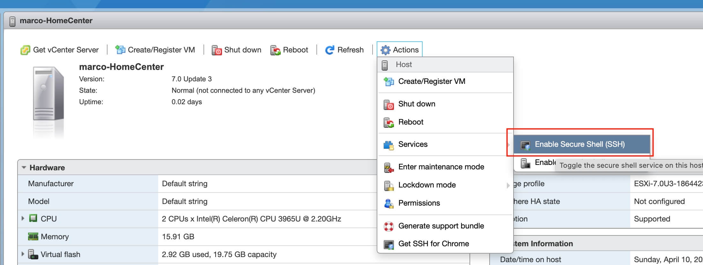

这篇文章上次修改于 570 天前，可能其部分内容已经发生变化，如有疑问可询问作者。
我家里的主机使用 esxi 管理多个 vm 虚拟机，之前的文章介绍过 esxi 的安装及使用：ESXi 的安装与使用，需要安装的可以参考。
通过浏览器访问 vcenter 管理界面默认会强制 https 模式，但是访问端并没有安装 vcenter 管理网页的证书，所以会提示不安全的链接，下面介绍如何在 esxi 上安装自定义域名的 ssl 证书，并在客户机上安装。
开启 ssh
esxi 上的操作是通过 ssh 的方式，所以首先需要打开 esxi 的 ssh 访问权限。
访问 esxi 管理界面，在 host 菜单栏，选择 action - sevices - enable ssh：

打开 ssh 只对本次开机有效，重启 esxi 后会再次默认关闭。
然后就可以通过 ssh 访问 esxi。
创建证书
首先备份当前证书文件，防止修改错误无法恢复，进入 /etc/vmware/ssl 目录，新建 bak 文件夹，将目录内的 rui.crt, rui.csr, rui.key 文件移动到 bak 文件夹内：
cd /etc/vmware/ssl
mkdir bak
mv rui.* bak/然后在 /etc/vmware/ssl 下新建文件 webclient.cnf 编辑文件内容如下：
[ req ]
default_bits = 2048
default_keyfile = rui.key
distinguished_name = req_distinguished_name
encrypt_key = no
prompt = no
string_mask = nombstr
req_extensions = v3_req
[ v3_req ]
basicConstraints = CA:FALSE
keyUsage = digitalSignature, keyEncipherment, dataEncipherment
extendedKeyUsage = serverAuth, clientAuth
subjectAltName = DNS:<esxi.domain.name>, DNS:<esxi>, IP:<xxx.xxx.xxx.xxx>
[ req_distinguished_name ]
countryName = US
stateOrProvinceName = VA
localityName = SomeCity
0.organizationName = WOW
organizationalUnitName = Software
commonName = <esxi.domain.name>
[ alt_names ]
DNS.1 = <esxi.domain.name>
DNS.2 = <esxi>
IP.1 = <xxx.xxx.xxx.xxx>注意，将以上内容中尖括号<>中的内容替换为你实际的域名和IP地址，不需要保留尖括号。
文件修改并保存后，执行下面命令创建证书文件：
# 创建加密 key，它用来保证证书生效及运行
openssl genrsa -out /etc/vmware/ssl/rui.key 2048
# 创建一个证书注册请求文件，会用到上面创建的配置文件信息并保存到 key 中
openssl req -new -nodes -out /etc/vmware/ssl/rui.csr -keyout /etc/vmware/ssl/rui.key -config /etc/vmware/ssl/webclient.cnf
# 生成证书，使用了 x509 标准格式。其中定义了证书 730 天的有效期，也就是2年，可以根据需要自行更改时间
openssl x509 -req -days 730 -in /etc/vmware/ssl/rui.csr -signkey /etc/vmware/ssl/rui.key -out /etc/vmware/ssl/rui.crt -extensions v3_req -extfile /etc/vmware/ssl/webclient.cnf以上命令执行完成后，就在目录下生成了 rui.key, rui.csr, rui.crt 三个文件。我们只需要将 rui.crt 证书文件复制到客户机上安装，可以通过任何方式复制出来，例如 sftp，winscp 等。
esxi 上需要重启系统后新的证书才能生效。注意重启后 ssh 功能可能需要重新打开。
客户端安装证书
在 macOS 上安装证书，双击复制出来的 rui.crt 安装即可。安装后需要设置为信任，进入 keychain access 中，在 system 栏点击 certificates 菜单项就能找到刚刚安装的证书，双击证书进入属性，点击 trust 菜单，将 when using this certificate 设置为 always trust 即可，关闭时会提示输入密码。
此时我们就可以以 https 访问 esxi web 管理页面并且不会报证书错误了。
参考链接
How to Replace Your Default ESXi SSL Certificate With a Self-Signed Certificate
没有评论